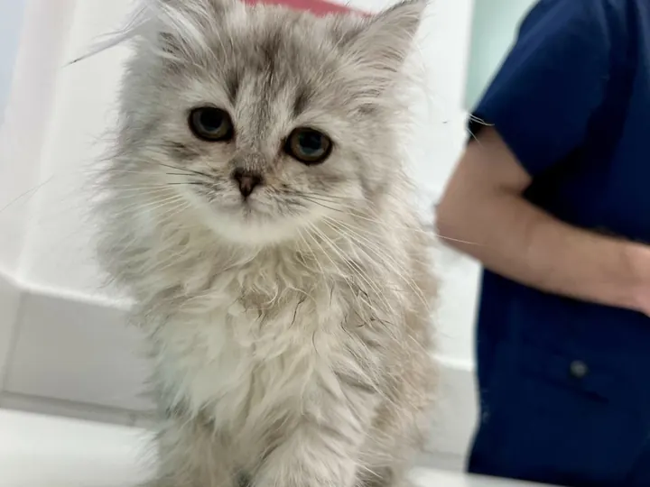
Betegvizsgálat és labor
Fizikális, laboratóriumi és mikroszkópos vizsgálat, vér- és vizeletvizsgálat, gyorstesztek, helyben, az állat mellett.
14 500 Ft vizsgálat, gyógyszer nélkül
Pécs, Hársfa út 27.Hosszúhetény, Fő u. 109.
Négy állatorvos, röntgen, ultrahang és helyben végezhető labor a Hársfa úton, hétfőnként Hosszúhetényben is. Ígérjük, hogy úgy bánunk kedvencével, mint a sajátjainkkal.
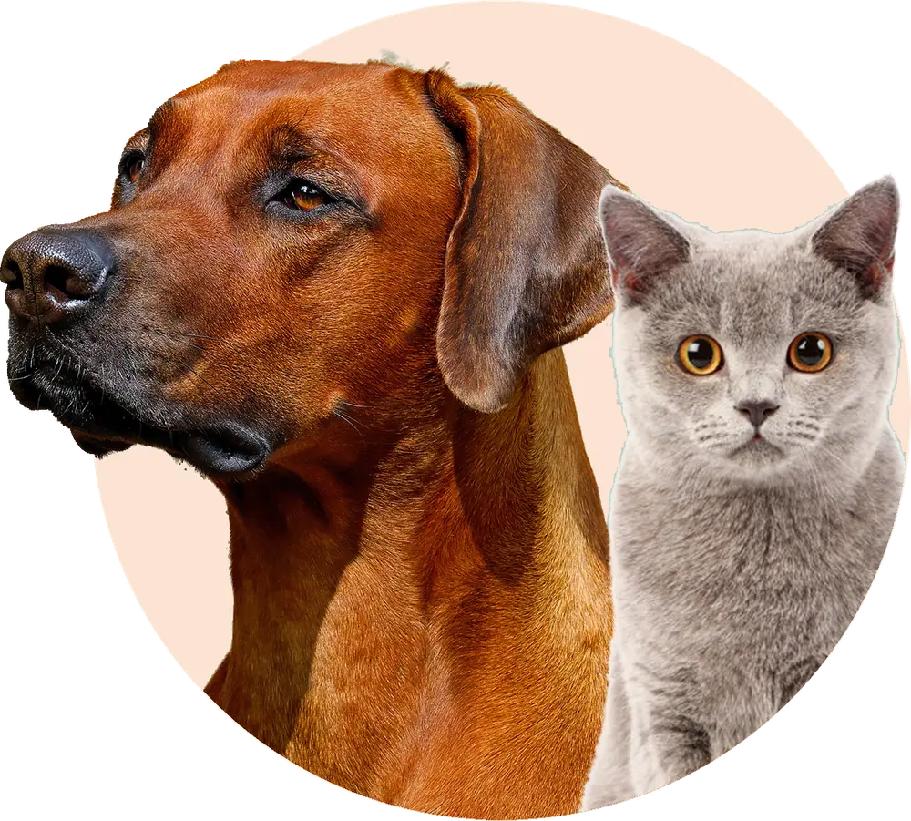
Négy orvosunk más-más napokon és órákban rendel. Válasszon egy napot a héten, és látja, ki van bent, mikor van nyitva a rendelő, és kihez kérhet időpontot.
Válasszon napot:
Kattintson egy orvosra, és hozzá kérhet időpontot.
Eseti változások lehetnek, ezzel kapcsolatban telefonon érdeklődhet!
A kezdetektől kifejezetten kutyák és macskák gyógyításával, betegségeik megelőzésével foglalkozunk. Az árak a rendelő aktuális árlistájából valók.

Fizikális, laboratóriumi és mikroszkópos vizsgálat, vér- és vizeletvizsgálat, gyorstesztek, helyben, az állat mellett.
14 500 Ft vizsgálat, gyógyszer nélkül
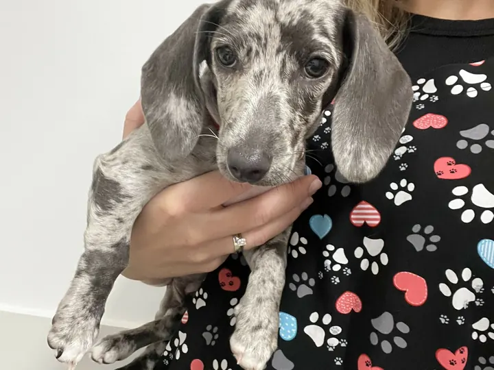
Kötelező és ajánlott védőoltások, mikrochipes megjelölés regisztrációval, kisállat-útlevél kiállítása.
10 500 Ft-tól veszettség elleni oltás
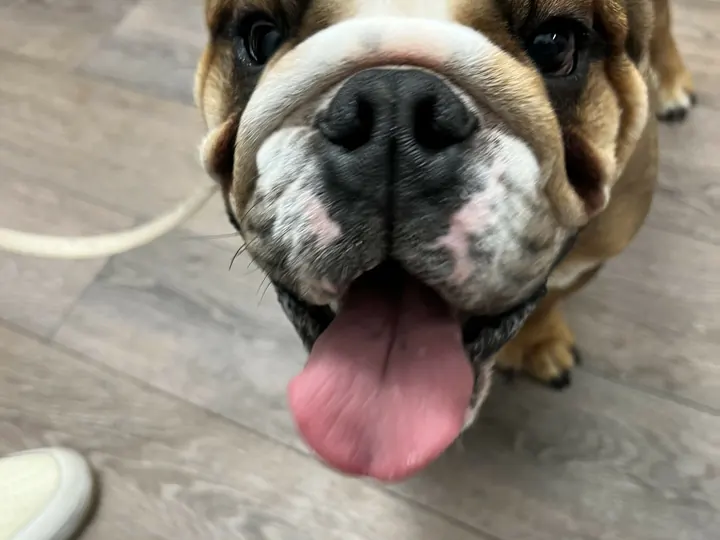
Röntgenfelvétel és regionális, hasi vagy szívultrahang a rendelőben, nem kell máshová vinnie kedvencét.
12 000 Ft-tól első röntgenfelvétel
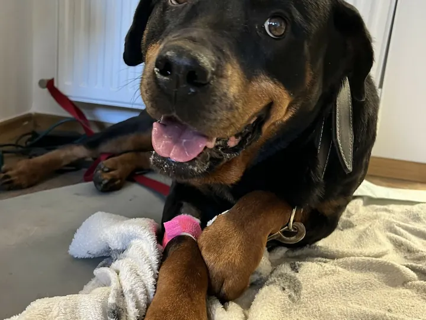
Ivartalanítás kedvezménnyel, lágyszervi és bizonyos ortopédiai beavatkozások saját műtőben.
20 000 Ft-tól kandúr macska ivartalanítása
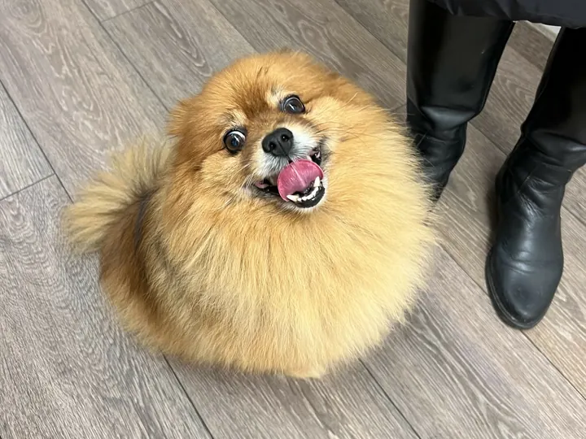
Fogkő-eltávolítás ultrahangos depurátorral, akár egy másik műtét mellé kiegészítve.
29 000 Ft az altatás költsége nélkül
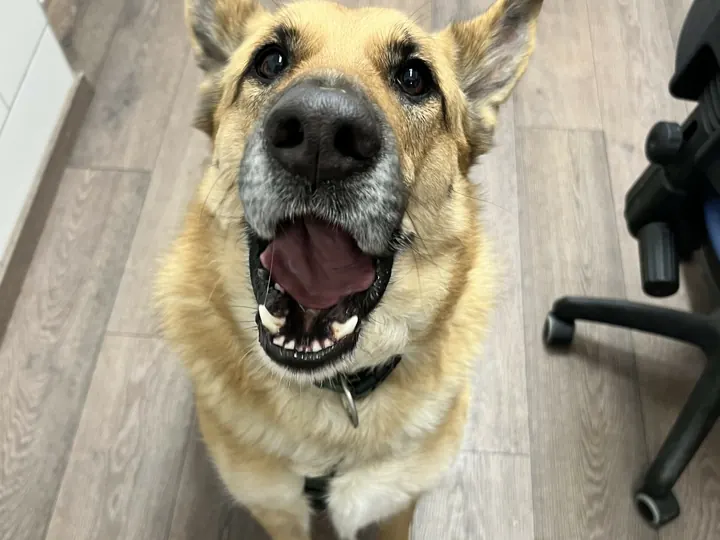
Kutyáknál fizikális vizsgálat, hasi és szívultrahang, vérvizsgálat, szívféregteszt és vizelet; macskáknál pajzsmirigy, FeLV/FIV teszt is.
80 000 Ft kutyának vagy macskának
Továbbá: szűrővizsgálatok (szív- és bőrféreg, macska leukózis és AIDS, ízületi diszpláziák), féregtelenítés, bolha és kullancs elleni egyéni tanácsadás, ellátás háznál (kiszállási díj 9 000 Ft-tól). Komolyabb vizsgálatokhoz az ország legrangosabb szaklaboratóriumaival állunk kapcsolatban.
Az ivartalanítás sok állatvédelmi gondot megelőz. Ezért három kedvezményt adunk, és az állatoknak nem kell egy háztartásból érkezniük: fogjanak össze ismerőseikkel, barátaikkal!
Ha az állat minden ajánlott és kötelező oltását és a chipjét nálunk kapta.
Ha a műtétre egyszerre 2 állatot hoznak.
3 állatnál két ivartalanítás díjáért a harmadikat ingyen végezzük.
A rendelő árlistája szerint.
Az árlistában külön tétel a műtét előtti labor: 24 000 Ft, ha egy éven belül volt szívféregszűrés, egyébként 32 000 Ft.
A rendelő teljes, aktuális árlistája. Keressen rá arra, ami érdekli, például „oltás”, „röntgen” vagy „chip”.
Nincs ilyen tétel az árlistában. Kérdezze telefonon: 72/222-951.
Ügyeleti időben végzett műtét: +50%, de legalább 20 000 Ft. Ügyeleti időben végzett kezelés: a fenti díjak + 20 000 Ft.
Köszönjük, ha megtisztelnek minket bizalmukkal, és állatukat ránk bízzák! Ígérjük, hogy úgy bánunk velük, mint a sajátjainkkal.
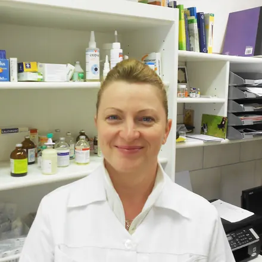
2000-ben cum laude diplomázott, belgyógyászati gyakorlatát az utrechti állatorvosi kar belgyógyászati tanszékén töltötte. Gyömbér, Lala és Murci gazdája.
Rendel: hétfő–péntek 12:30–1606 30 895 1977
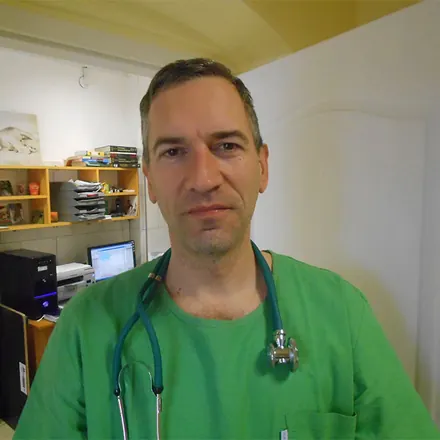
Budapesti állatkórházi gyakorlat és évek a hatósági vonalon után feleségével együtt hozta létre a Hársfa úti és a hosszúhetényi rendelőt.
Rendel: kedd, szerda, csütörtök 8–11+36 30 600 1260
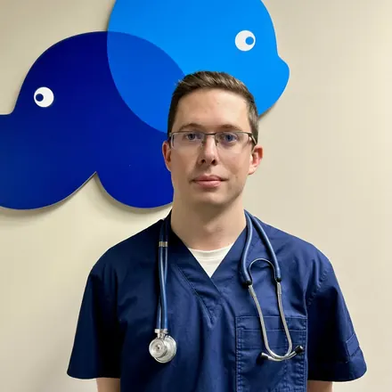
2024-ben diplomázott az Állatorvostudományi Egyetemen. Kisállatok gyógyításával foglalkozik, a belgyógyászatban és a sebészetben is.
Rendel: hétfő, kedd, szerda, péntek 8–11, csütörtök 14–18
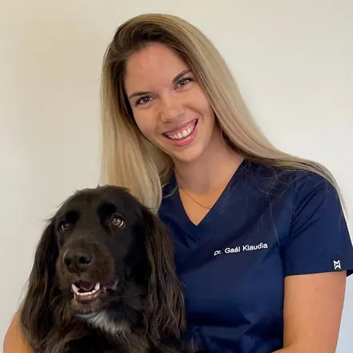
2025-ben cum laude diplomázott. Az egyetemen a kisállatgyógyászatban találta meg az útját, a belgyógyászatban és a sebészetben is.
Rendel: hétfő, csütörtök, péntek 8–11, kedd, szerda 14–18
Pécsett 2009. április 15-én nyílt meg rendelőnk, Hosszúhetényben 2013. november 26-án. A lehetőségeinket meghaladó esetekhez az elérhető legmegbízhatóbb szakemberekhez irányítjuk pácienseinket.
Visszatérő téma a vélemények között: kedves, figyelmes orvosok és asszisztensek, és gazdik, akik évek óta hozzánk járnak.
„Kedves és nagyon figyelmes orvosok vannak a rendelőben.” Az örökbefogadott vizsla „jutifalatokat kapott a teljes vizsgálat alatt”.
„Kutyáinkat már évek óta ők kezelik.” „Rendelőben mindenki kedvesen, segítőkészen viszonyult hozzánk.”
„Köszönettel tartozunk a rendelő minden orvosának és asszisztensének.”
Ha nem találja a választ, hívja a pécsi rendelőt: 72/222-951.
Időpontot az online foglalóban vagy telefonon kérhet (72/222-951, 06 30 202 6492). Szombaton időpont nélkül is lehet érkezni, de ilyenkor 6000 Ft felárat számítunk fel, és hosszabb várakozásra kell számítani. Szombaton részletes műszeres vizsgálatot (ultrahang, labor, röntgen) csak a legszükségesebb esetekben végzünk.
Ha több mint 24 órával előtte lemondja, nincs költsége. 24 órán belüli lemondásnál 5000 Ft, lemondás és megjelenés nélkül 9000 Ft a díj, amelyet a következő kezeléskor számítunk fel. Műtéten való meg nem jelenésnél az adott műtét árának 50%-a. A lemondást kérjük, írásban jelezze.
A rendelő a Hársfa út 27.-ben van, a Torda utca betorkollásánál. Díjtalanul parkolhat a rendelő előtt és a Torda utcában. A 28-as, 38-as és 140-es busz Hajnal utca megállójától kb. 20 méter (a 140-es nyári szünetben nem közlekedik).
A hosszúhetényi rendelő (Fő u. 109., a nagy CBA melletti parkolónál, a Vas-műszaki bolt mellett) hétfőn 16:30 és 18:00 között van nyitva, más időpontban telefonos egyeztetés után: +36 30 600 1260.
Rendelési időn kívül a Baranya megyei állatorvosi ügyeletet hívja; az aktuális ügyeletes elérhetősége a www.baranyaugyelet.hu oldalon található.
Igény esetén, külön kiszállási díj mellett (9000 Ft-tól, távolságtól függően) otthonában is ellátjuk kedvencét, kezelést, oltást adunk. Bizonyos betegségeknél a szakszerű ellátás háznál nem megoldható, és a legtöbb állat a vizsgálatokat idegen helyen jobban tolerálja, mint otthon.
10% hűségkedvezmény, ha az állat minden ajánlott és kötelező oltását és a chipjét nálunk kapta; 20% kedvezmény, ha egyszerre 2 állatot hoznak; 3 állatnál 2+1: két műtét díjáért a harmadikat ingyen végezzük. Az állatoknak nem kell egy háztartásból érkezniük.
Adja meg a nevét és a telefonszámát, és a rendelési időben visszahívjuk, hogy megbeszéljük az időpontot.
7627 Pécs, Hársfa út 27., a Torda utca betorkollásánál. Díjtalan parkolás a rendelő előtt és a Torda utcában.
Hétfő–péntek 8–11 és 14–18, szombat 9–11
Telefon: 72/222-951, mobil: 06 30 202 6492
E-mail: harsfautirendelo@gmail.com
7694 Hosszúhetény, Fő u. 109., a nagy CBA melletti parkolónál, a Vas-műszaki bolt mellett.
Hétfő 16:30–18, más időpontban telefonos egyeztetéssel
Telefon: +36 30 600 1260
E-mail: orban1peter@gmail.com